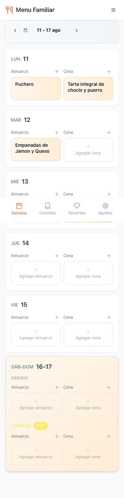
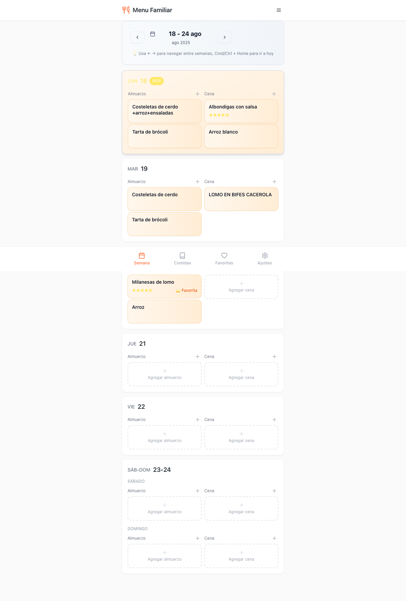
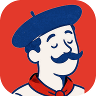

Nori: hogar coordinado
Su fortaleza estratégica es presentar las comidas dentro de un sistema compartido para la familia. Tomamos esa idea de “centro común”, no su estética. Ver referencia ↗
Sistema de identidad · Agosto 2026
Tres caminos visuales para Menú Semanal: frescos, familiares y lo bastante claros para organizar la semana sin perder de vista el encuentro.

Lo que vimos
La oportunidad está en combinar orden semanal con señales humanas: una mesa compartida, colores de alimentos reales y una voz que incluya a toda la familia. La identidad actual ya tiene calidez, pero el marrón del ícono y el naranja dominante no expresan por sí solos frescura ni encuentro.
Su fortaleza estratégica es presentar las comidas dentro de un sistema compartido para la familia. Tomamos esa idea de “centro común”, no su estética. Ver referencia ↗
El relato parte de una tensión real —decidir qué comer— y responde con calma, cercanía y fotografía de comida. La marca se siente asistente antes que herramienta. Ver referencia ↗
La app ya muestra semana, favoritos y participación familiar. El espacio propio está en volver visible el resultado emocional: organizarse para encontrarse.


Los cubiertos hacen reconocible la categoría. En las nuevas rutas se transforman en mesa, platos o personas para sumar el valor del encuentro.
La semana como un pequeño jardín: cada comida aporta algo y todas se encuentran en el centro. Es la opción más equilibrada entre frescura, confianza y vínculo familiar.
Cuatro platos-hoja miran hacia una mesa central: comida fresca + personas que convergen.
El motivo radial puede crecer para representar la cantidad real de integrantes de cada familia.
Tocá un color para copiar su HEX.
Bricolage da una voz reconocible, orgánica y segura al logo y los títulos. DM Sans mantiene calendario, recetas y cantidades compactos y muy legibles.
Conserva la estructura funcional actual, pero desplaza el peso del naranja hacia un verde profundo más fresco y durable.
Fondo claro, respirable y levemente verdoso.
Navegación, titulares, botones y estados positivos.
Lima y tomate para guiar, nunca como decoración suelta.
Se apropia de la frescura desde la huerta y no desde los códigos fríos de “salud”. El símbolo habla de familia aunque aparezca sin el nombre. Puede vivir en un ícono pequeño, una pantalla de inicio o una servilleta impresa.
Una sobremesa al aire libre: cielo, agua fresca, sol y una fuente compartida. Es la opción más luminosa, simple y digital.
Un arco abierto contiene una mesa. El sol y el pequeño plato hacen del hogar un lugar luminoso.
Los arcos funcionan como marcos de fotos, ventanas de recetas o contenedores de días.
Tocá un color para copiar su HEX.
Sora construye una identidad geométrica y amable. Nunito Sans suma una lectura blanda, ideal para hogares con adultos y chicos usando la misma interfaz.
El turquesa organiza y el amarillo da ritmo. Se siente fresca incluso con pocas fotografías de comida.
Superficies claras y mucho espacio sin ruido.
Turquesas y azul en estructura y controles.
Amarillo y guayaba marcan energía y afecto.
Es la alternativa más liviana para una PWA y mantiene alta claridad en pantallas pequeñas. Su riesgo es parecer más “servicio digital” y menos cocina; se corrige usando fotografía casera y el arco como firma constante.
Siete días, muchas voces y una mesa común. Es la opción con más personalidad para una app donde chicos y adultos califican, proponen y eligen juntos.
Siete puntos —los días— rodean la mesa. También se leen como integrantes de una familia.
Un punto cambia de color cada día y vuelve al símbolo una pieza viva dentro del producto.
Tocá un color para copiar su HEX.
Funnel tiene curvas expresivas sin perder control. Atkinson fue pensada para distinguir mejor cada carácter, una ventaja real en fechas, notas y recetas.
La paleta convierte votaciones, estrellas y comentarios en parte central de la marca.
La base casi blanca evita una interfaz infantil.
Identidad, navegación y confirmaciones.
Miembros, reacciones, hitos y estados.
Hace propia la dimensión multiusuario y convierte el ritmo de siete días en un activo visual. Es la ruta más diferenciada, aunque exige más disciplina para que los colores de personas no se confundan con estados del sistema.
Recomendación
Es la que mejor sintetiza lo pedido: se siente fresca desde el primer vistazo, expresa encuentro en su símbolo y puede acompañar a la app desde hoy hasta una experiencia multifamilia más compleja.
La mejor combinación de familiaridad, frescura y vida útil.
La opción más clara y liviana; muy buena si se prioriza una sensación tecnológica calma.
La más distintiva y participativa; ideal si chicos y votaciones serán el corazón del producto.
Recomendamos escribir siempre Menú Semanal, con tilde, tanto en el producto como en el logo. Hoy conviven “Menu Familiar” en una captura y “Menu Semanal” en el código; la implementación de marca debería unificar esa nomenclatura.